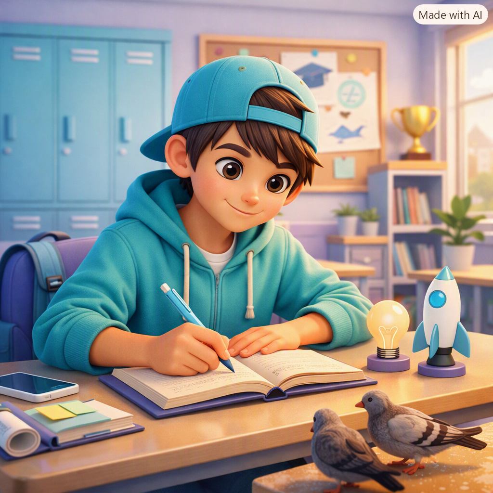
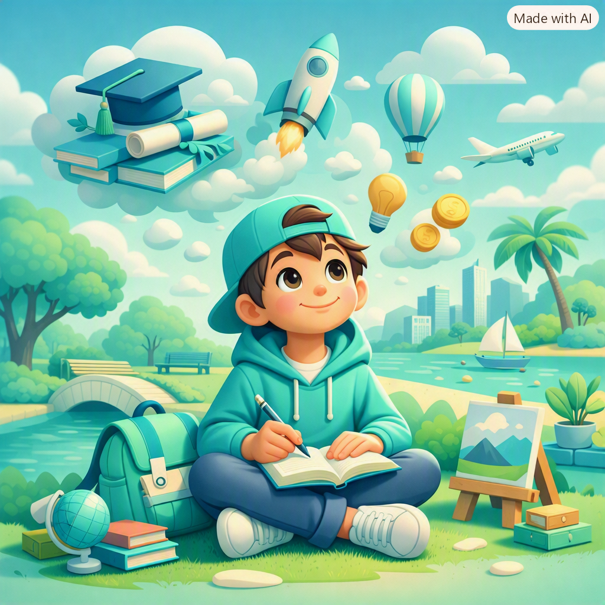
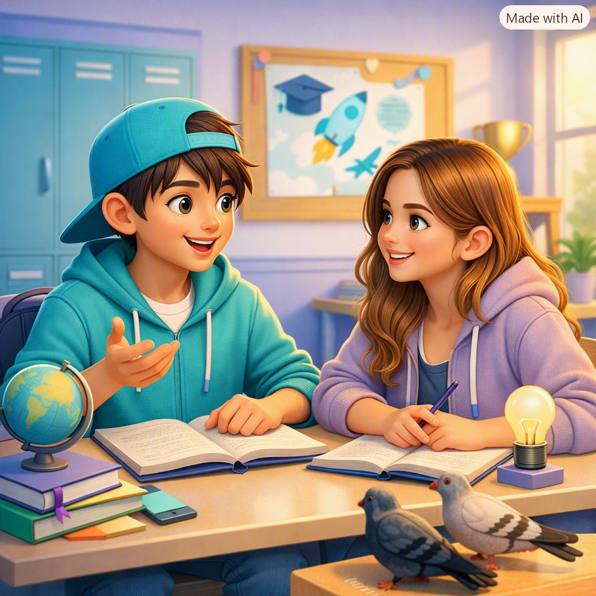
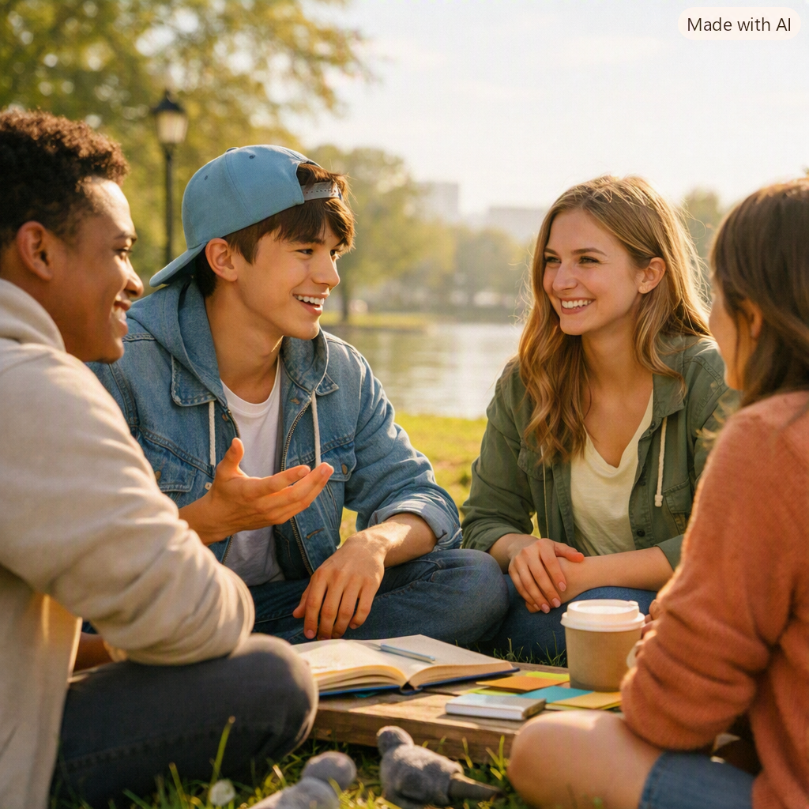

Construyendo el camino hacia mis metas personales y profesionales
Un proyecto de vida es un plan personal a largo o mediano plazo que se piensa seguir a través de los años. Se diseña con el fin de cumplir determinados objetivos o metas concretas y se basa en gustos personales, valores o habilidades.
Abarca aspectos fundamentales como la carrera universitaria, el trabajo, las relaciones de pareja o la formación de una familia. Este proyecto suele comenzar a definirse al alcanzar cierta madurez, alrededor de los 20 años, cuando la persona comienza a identificar sus intereses, motivaciones y desafíos.


Tener un plan trazado nos permite conducir nuestras acciones con claridad y propósito. Sus principales beneficios son:
Nombre: johana (18 años, Bogotá).
Perfil: Responsable, creativa, le gusta ayudar a los demás. Interesada en la tecnología y el cuidado del medio ambiente.
Ser ingeniera de sistemas y crear proyectos con Arduino que ayuden a su colegio y comunidad. Darle una casa propia a su familia y viajar para conocer otros países.
Aprender todos los días, ser mejor persona y usar el conocimiento para resolver problemas reales.
Respeto, responsabilidad, honestidad, perseverancia y solidaridad.


“Si riegas tus sueños todos los días, como a una planta, algún día florecerán”